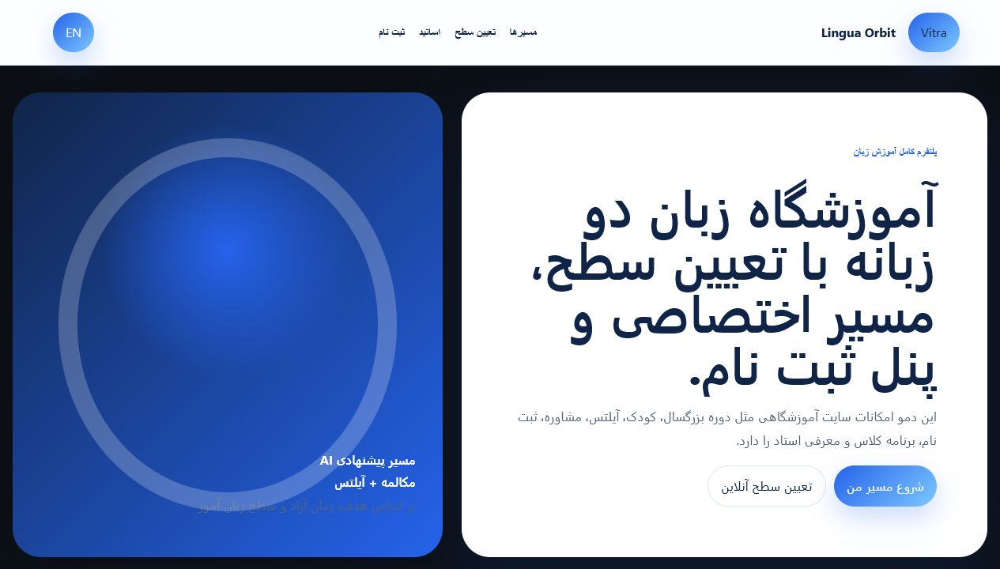
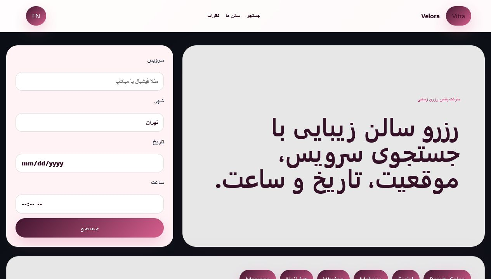
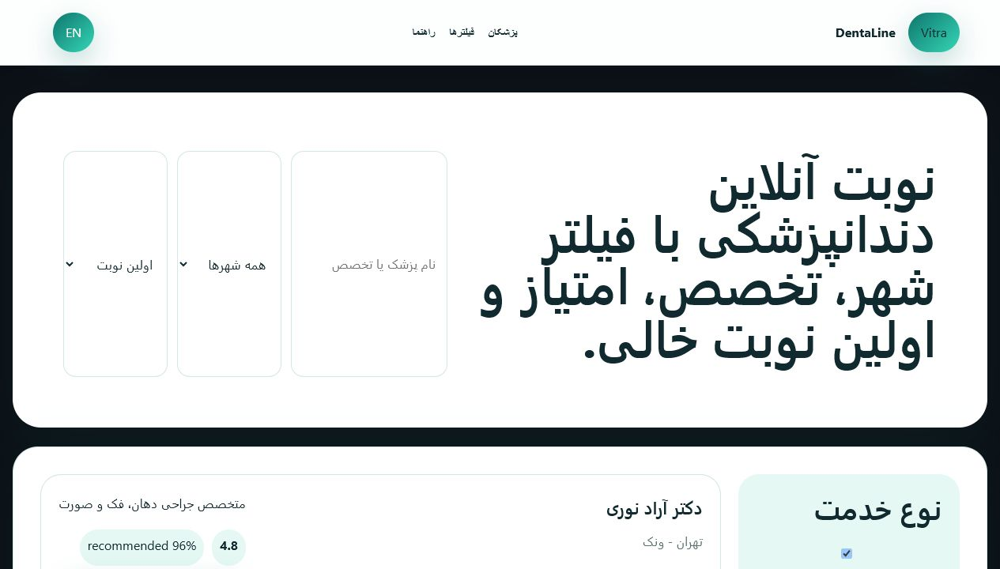
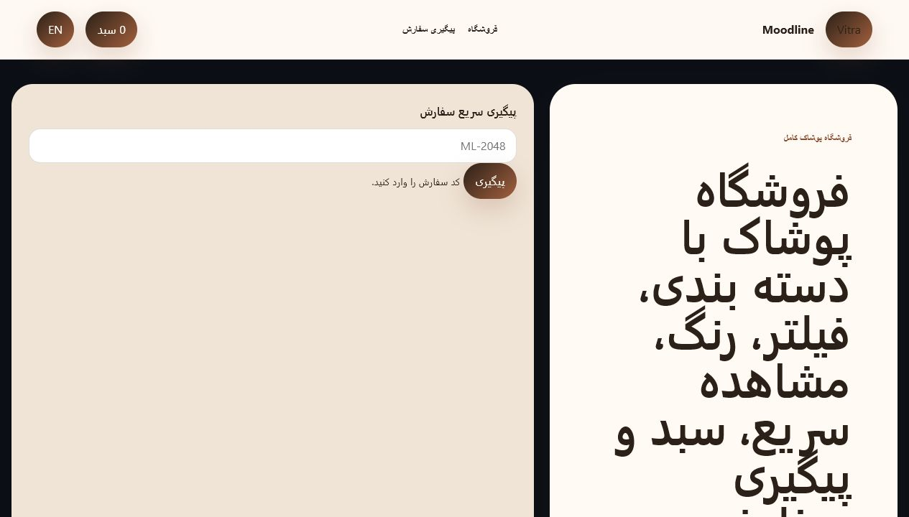

آموزشگاهی | Lingua Orbit
دموی آموزشگاه با مسیر کامل ثبت نام
تعیین سطح، دورهها، اساتید، برنامه کلاس، شهریه، پرسشهای پرتکرار و فرم ثبتنام دو زبانه.
ورود به دموDemo Gallery
هر دمو یک صفحه مستقل دارد تا مشتری با ساختار، قابلیتها، فرمها و مسیر پنل آشنا شود؛ نه فقط یک کارت ساده.

تعیین سطح، دورهها، اساتید، برنامه کلاس، شهریه، پرسشهای پرتکرار و فرم ثبتنام دو زبانه.
ورود به دمو
جستجوی سرویس، شهر، تاریخ، ساعت، نقشه زنده، کارت سالنها، گالری، متخصصها و پیشنهاد روز.
ورود به دمو
جستجوی پزشک، فیلتر شهر و نوع مشاوره، مرتبسازی، رزرو نوبت، بیمه، پرونده و راهنمای درمان.
ورود به دمو
دستهبندی، مرتبسازی، رنگ و سایز، مشاهده سریع، سبد خرید، لوکبوک، ارسال و پیگیری سفارش.
ورود به دموPortfolio Presentation
مشتری قبل از ورود، حس بصری و ساختار دمو را از thumbnail میبیند.
هر نمونه مسیر داخلی دارد؛ مثل دورهها، رزرو، نوبتدهی یا صفحه محصول.
در هر دمو قابلیتها، پنل مرتبط، فرمها و سناریوی استفاده مشخص است.